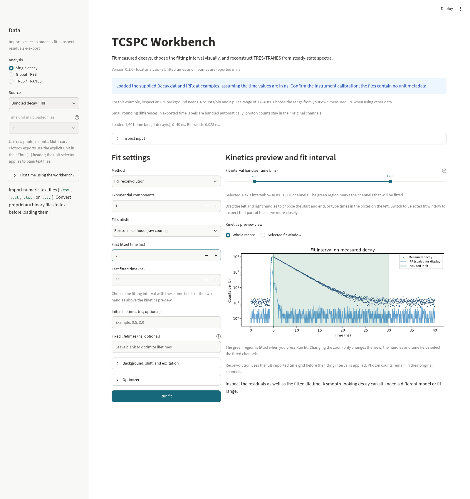

A local Python application for fluorescence lifetime fitting, global TCSPC analysis, and reconstruction of time-resolved emission spectra (TRES) and area-normalized spectra (TRANES).
Application version: 0.1.0 — initial public release. The repository includes the local application, numerical examples, operating guides, tests and contribution tools.

Calculations run locally; Streamlit displays the interface in your browser. Ordinary local analysis needs no cloud account. The application includes a Python API and command-line tools.
Experimental users: read the illustrated User guide. Its offline edition,
USER_GUIDE.html, opens directly in a browser after
extracting the whole package.
Already have a compatible Python environment? You
can use it. Open a terminal with that environment activated, change to
this repository’s folder containing app.py, then run:
python -m streamlit run app.pyUse the Local URL printed in the terminal, usually
http://localhost:8501. Keep that terminal open; Ctrl+C
stops the app.
First installation: use the Windows quick start or the complete installation instructions. The Windows guide includes an Anaconda/MKL option. A standard virtual-environment route is:
python -m venv .venvActivate it with source .venv/bin/activate on
macOS/Linux or .venv\Scripts\activate.bat in Windows
Command Prompt, then:
python -m pip install -r requirements.txt
python -m streamlit run app.pyPython 3.12 is the version used for local release validation; the declared minimum is 3.10. Dependency installation requires internet access. For Anaconda Navigator, PowerShell or an existing environment, follow INSTALLATION.md rather than mixing installation routes.
Use original photon counts for Poisson fitting. The data-format guide shows CSV layouts, units
and source-curve selection. User measurements belong outside the tracked
examples, for example in the ignored data/ directory.
See Scientific notes for definitions and assumptions. A converged optimizer or a diagnostic near one does not establish a physical model.
The v0.1.0 numerical/import/CLI suite contains 69 tests. Additional release checks exercised manual table entry and the single/global interfaces in Streamlit and Chromium; details are in VALIDATION.md.
Run the numerical suite from the repository root:
python -m unittest discover -s tests -vGitHub Actions is configured to run the suite on Linux and Windows with Python 3.10 and 3.12. Results of hosted runs become available after the repository is uploaded and Actions runs; no hosted status is claimed here.
Contributing explains development and
numerical-change expectations. Support
describes useful bug reports. Keep private measurements, credentials and
local environments out of commits; .gitignore covers
designated data/output folders, not arbitrary files everywhere on the
computer.
| Path | Purpose |
|---|---|
app.py, tcspc/ |
Application, numerical engine, importers and CLI |
tests/ |
Numerical, import, export and CLI tests |
examples/ |
Synthetic and contributed examples, with provenance |
example_results/ |
Reference outputs reproducible with example scripts |
docs/ and root guides |
Screenshots, scientific review and offline documentation |
.github/ |
CI workflow and issue/pull-request templates |
Original project code/documentation use the MIT licence. Contributed measured examples retain their original rights; the code licence does not grant rights to those measurements. Read Example-data provenance before redistributing the full example collection publicly.
Use CITATION.cff for software citation. It currently credits the project contributors collectively; the maintainer should enter the intended author details before public release. No paper, repository URL or DOI is invented. A versioned repository can later be archived on Zenodo.
Preparing your own GitHub upload? Follow GITHUB_UPLOAD.md, including what to personalize and how to create the v0.1.0 release.